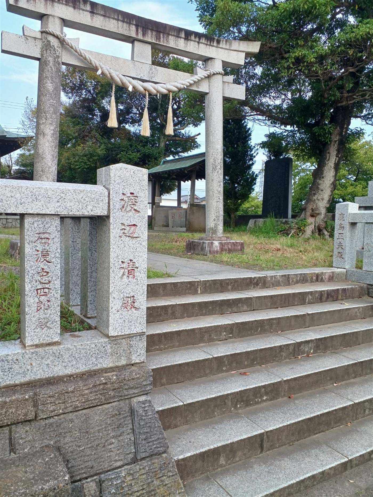

八重原 歴史さんぽいつものまちに、
いつものまちに、
まだ知らない物語。
八重原は、三直・法木作・内箕輪・外箕輪・杢師・南子安・北子安の七つの村が 明治22年（1889）に合併してできた地域です。それぞれの地名には、 千年をこえて語りつがれてきた由来があります。 お手元のマップと同じ色をたどって、あなたの住む地区をひらいてみてください。
八つの地区をめぐる
08 DISTRICTS紙のマップと同じ色の地区を選んでください。
おもな出典
『君津町誌（前編）』昭和35年／『君津の歴史たんぽう 第一冊』／
『思いでの中の八重原』／『きみペディア』／『三直』／
『箕輪土地区画整理事業のあゆみ』